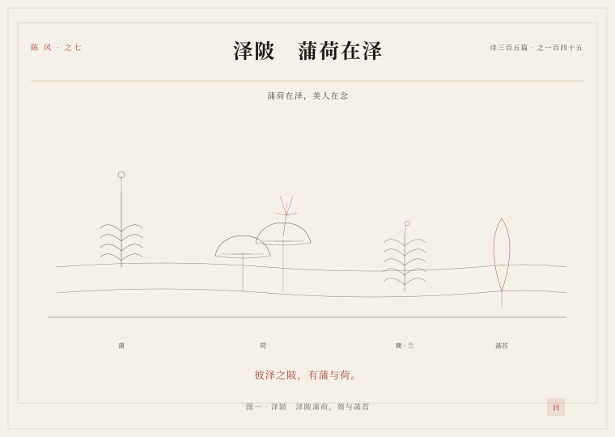
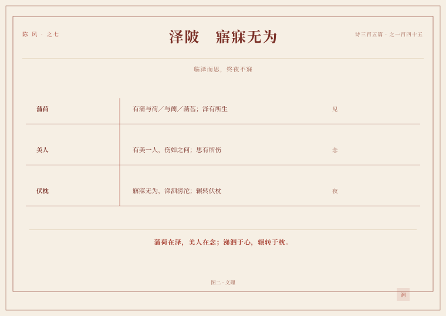

第一百四十五篇 泽陂
陈风 · 之十 SJ145
朗读 · 普通话
依经文原文朗读，章次不读出；配古琴底乐，不改速、不加拖腔。全库同一音色（豆包 TTS），非播音员录制。
一 解题
诗三判：
- 谁在说：怀思感伤之人。临泽陂而见蒲荷，念所美一人，伤思不已；由见而思而卧，终至于辗转伏枕。
- 说什么事：三章换「荷／蕳／菡萏」，「伤如之何／硕大且卷／硕大且俨」，「涕泗滂沱／中心悁悁／辗转伏枕」。所见者水草，所思者美人；所止者一枕，忧思由外境入于心、复入于卧。
- 为何编在此：陈风十篇至此收齐。
自《宛丘》巫舞开篇，历会遇、怀思、忧谗、刺恶，终篇归于一人之忧伤感伤；一编陈风，声色歌舞皆尽，独留此一枕辗转之思，为卷终之收束。
《毛序》：“《泽陂》，刺时也。言灵公君臣淫于其国，男女相说，忧思感伤焉。”
朱子《诗集传》：“兴也。陂，泽障也。蒲，水草可为席者。荷，芙蕖也。自目曰涕，自鼻曰泗。○此诗之旨，与月出相类。言彼泽之陂，则有蒲与荷矣。有美一人，则伤如之何矣。寤寐无为，而涕泗滂沱也。”二章：“蕳，兰也。卷，聚也，鬓发之卷。悁悁，犹悒悒也。”三章：“菡萏，荷华也。俨，矜庄貌。”
本库的看法：《泽陂》是一首临泽怀人、忧思感伤至终夜辗转的诗。
毛序以为刺时，系于灵公君臣淫乱、男女相说；朱子谓与《月出》相类，作男女相念之辞。本库从朱读辞面：诗中只有泽陂、蒲荷、美人与伏枕，不指陈君臣淫乱之事；毛序「男女相说，忧思感伤」一层，作为陈风世风的背景。
与《郑风·野有蔓草》对读：彼「邂逅相遇」，得一时之愿；此「有美一人」，失终日之思。
断语：蒲荷在泽，美人在念；涕泗于心，辗转于枕。
先辨五事：「陂」是泽畔堤障，不是山坡；「蒲」是水草可织席者，不是蒲柳；「蕳」是兰草，不是蔺草；「伤」是伤思、思念伤怀，不是受伤；「卷」是鬓发柔卷，不是卷曲蜷缩；「俨」是矜庄端庄，不是俨然俨然。
二 经文
第一章
彼泽之陂，有蒲与荷。
有美一人，伤如之何？
寤寐无为，涕泗滂沱。
第二章
彼泽之陂，有蒲与蕳。
有美一人，硕大且卷。
寤寐无为，中心悁悁。
第三章
彼泽之陂，有蒲菡萏。
有美一人，硕大且俨。
寤寐无为，辗转伏枕。
分章：三章，章六句。
三 韵读
- 一章：荷、何、沱，歌部；「陂」「为」旁属，不入韵。
- 二章：蕳、卷、悁，元部；章内一贯。
朱传音「悁，乌玄反」。
- 三章：萏、俨、枕，谈侵通押；「枕」侵部，与萏、俨相叶。
读法：一章歌部平缓起思，二章元部绵连，三章谈侵沉郁收枕；「寤寐无为」三章不改，是全诗之骨；三叠由涕泗而心郁而伏枕，一层深入一层。
四 字义与名物
- 陂：泽障，泽畔堤岸。蒲：水草，可织席。荷：芙蕖。蕳：兰草（一作「蔺」，异文存疑）。菡萏：荷华，荷花之未开者通称。
- 有美一人：有一美人。伤：伤思，思念伤怀。硕大：身材高大丰满。卷：鬓发柔卷。俨：矜庄端庄。
- 寤寐：醒与睡。无为：无所为，百念不宁。涕泗：自目曰涕，自鼻曰泗。滂沱：泪流之貌。悁悁：犹悒悒，忧郁不舒。辗转：反覆翻身。伏枕：伏卧于枕。
五 今译
那泽畔的堤岸上，长着蒲草与荷花。有一位美人啊，叫我伤思能怎么办？醒着睡着都百念不宁，眼泪鼻涕滂沱而下。
那泽畔的堤岸上，长着蒲草与兰草。有一位美人啊，高大丰满鬓发柔卷。醒着睡着都百念不宁，心里忧郁难舒。
那泽畔的堤岸上，长着蒲草与荷花。有一位美人啊，高大丰满端庄矜庄。醒着睡着都百念不宁，反覆翻身，伏枕难眠。
六 章旨
- 一章：写蒲荷、伤思、涕泗。见水草而起思，思之极而泪下；伤在情初见伤。
- 二章：写蒲蕳、硕大且卷、悁悁。思其人之容态，身郁于心；泪收而心未舒。
- 三章：写蒲与菡萏、硕大且俨、辗转伏枕。思至其矜庄之度，终夜反侧；情尽入于卧，断在伏枕。
- 总收：三章由见而思而卧：一章在外境，二章在中心，三章在枕席；陈风一编，至此收于一人之不寐。
七 诗教
- 兴：以泽陂蒲荷起兴，以水草之美盛，兴美人之可观；物在泽中，人在念中。
- 观：观忧伤如何由外而内、由心而身——涕泗、悁悁、辗转；外境触思，中心成郁，形于卧起。
- 群：思者与所美一人遥对，泽陂为公共之境，枕席为独私之地；境可共见，思不可共语。
- 怨：怨在「伤如之何」一叹；不怨其人负心，不怨其世不遇，所伤是思念之无由自达。
八 分寸与边界
- 不可把此篇坐实为灵公君臣淫乱之刺。毛序说时，诗面不指实；一补陈宫秽事，感伤之诗就成讥弹。
- 不可把「伤如之何」读成受伤、悲伤于事。伤是伤思；一读成遭受伤痛，怀思之旨即偏。
- 不可把「硕大且卷／俨」解作赞美男子体魄的礼辞。诗中美人不别男女；一坐实性别，容态之写就偏成传状。
- 不可把「辗转伏枕」读成安眠之后的余态。伏枕是反侧难眠；一读成安卧，三叠忧思落空。
- 不可把蒲、荷、蕳、菡萏当植物学图谱分列。它们是兴象之水草；一味辨种辨色，诗眼就散。
- 不可以毛序「男女相说」反推诗中必有相会之约。此篇无邂逅、无赠答；一补约会，感伤就成了风情。
九 存疑
- 诗旨：毛序「刺时，灵公君臣淫于其国，男女相说，忧思感伤」；朱子「与月出相类」，作相念之辞。本库从朱读辞面，毛序说存为背景。
- 「蕳／蔺」：毛诗作蕳（兰也），或作蔺；字异而物名或同。从蕳，蔺说存疑。
- 「卷」：朱传「聚也，鬓发之卷」；一说「卷」通「婘」，好貌。从鬓发柔卷。
- 「俨」：矜庄貌；一说「俨」通「严」，威重。两存，从矜庄。
- 所思者性别：旧说或以为女思男，或以为男思女；诗面不别。不指实。
- 年代与作者：诗作于陈风何时，作者何人，诗中无征；不可据序补世系。
十 跨典
- 《诗经·郑风·野有蔓草》（SJ094）：「邂逅相遇，适我愿兮。」——一时之遇；彼得相遇之愿，此失终日之思，一遇一思，正面对读。
- 《诗经·周南·关雎》（SJ001）：「求之不得，寤寐思服；辗转反侧，寤寐无为。」——寤寐辗转之思；关雎思在求而未得，此篇思在伏枕难宁，同一种不寐。
- 《左传·宣公十年》：灵公君臣戏于朝、徵舒病之——毛序所指「灵公君臣淫于其国」之背景；诗不指此事，事为诗之背景。
- 《礼记·孔子闲居》：「君子之所谓王者，必达于礼乐之原。」——陈风终篇犹存忧伤之思；礼失而情未泯，故风诗可以观世。
- 《诗经·陈风·月出》（SJ143）：「舒窈纠兮，劳心悄兮。」——朱传谓此篇与月出相类；前篇月下相念，此篇泽畔伏枕，陈风两思相终始。
十一 双卡与图
六对：
| 陂（泽畔堤障） |
陂（山坡） |
| 蒲（水草可席） |
蒲（蒲柳） |
| 蕳（兰草） |
蕳（蔺草／他物） |
| 伤（伤思） |
伤（受伤） |
| 卷（鬓发柔卷） |
卷（蜷缩） |
| 伏枕（反侧难眠） |
伏枕（安卧） |

图一 · 泽陂 泽陂蒲荷，蕳与菡萏

图二 · 泽陂 寤寐无为，辗转伏枕
读图三处：
- 泽陂水草：图一堤岸一线，蒲、荷、蕳、菡萏各立其形；花叶线描不施面，不画全株繁叶。
- 美人不画面目：图二所美一人只作无脸剪影，见身姿不见五官；泪、思、卧三层以位置相次。
- 收卷一枕：图二三行「涕泗滂沱／中心悁悁／辗转伏枕」，末行伏枕一形，朱线收在「伏枕」；陈风十篇至此收齐，图中不留相会之境。